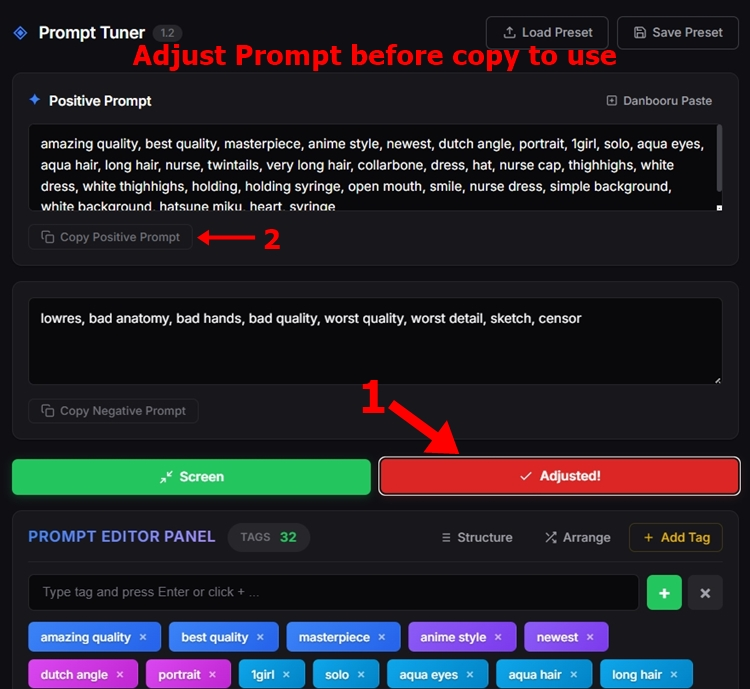

วิธีการใช้งาน Prompt Tuner: คู่มือทีละขั้นตอน
ขั้นตอนที่ 1: เปิดหน้าต่าง Danbooru Paste
เริ่มต้นด้วยการคลิกปุ่ม Danbooru Paste ที่มุมขวาบนของพื้นที่ Positive Prompt เพื่อเปิดหน้าต่างสำหรับนำเข้าแท็ก
Step 1: Open the Danbooru Importer
Start by clicking the Danbooru Paste button located in the top right corner of the Positive Prompt area. This will open a dedicated window for importing tags.

ขั้นตอนที่ 2: ก๊อปปี้แท็กจาก Danbooru
ไปที่เว็บ Danbooru ค้นหารูปภาพที่มีคอนเซปต์ตรงกับที่คุณต้องการ แล้วลากคลุมรายการแท็กที่แถบด้านซ้าย จากนั้นกด Ctrl + C เพื่อก๊อปปี้
Step 2: Copy Tags from Danbooru
Go to Danbooru, find an image that matches your desired concept, and highlight the tag list on the left sidebar. Press Ctrl + C to copy the tags.

ขั้นตอนที่ 3: วาง, แปลงค่า, และเพิ่มเข้า Prompt
กลับมาที่ Prompt Tuner แล้ววาง (Ctrl + V) แท็กที่ก๊อปมาลงในหน้าต่าง Danbooru Paste กดปุ่ม Convert เพื่อล้างข้อมูลขยะและจัดรูปแบบให้ถูกต้องในพริบตา จากนั้นกด Add to Prompt เพื่อส่งแท็กที่คลีนแล้วเข้าสู่พื้นที่ทำงานหลัก
Step 3: Paste, Convert, and Add
Return to Prompt Tuner and paste (Ctrl + V) the raw list into the Danbooru Paste window. Click Convert to instantly clean up formatting and remove irrelevant characters. Finally, click Add to Prompt to send the clean tags directly into your workspace.

ขั้นตอนที่ 4: ตรวจสอบโครงสร้าง Prompt
เมื่อแท็กเข้ามาอยู่ใน Editor แล้ว ให้คลิกปุ่ม Structure ระบบจะเปิดแผงควบคุมที่ช่วยจัดกลุ่มแท็กทั้งหมดของคุณ ทำให้เห็นภาพรวมได้ทันทีว่ายังขาดองค์ประกอบส่วนไหนไปบ้าง
Step 4: Review Your Prompt Structure
Once your tags are loaded into the editor, click the Structure button. This opens a visual panel that categorizes all your current tags, helping you see exactly what elements are missing.

ขั้นตอนที่ 5: เติมเต็มช่องว่างด้วยแท็ก Template
ในแผง Structure ให้ดูหมวดหมู่สำคัญที่ยังว่างอยู่ (เช่น Quality, Style, Image Composition หรือ Negative Prompt) แล้วคลิกปุ่ม + Template เพื่อเติมแท็กพื้นฐานคุณภาพสูงลงในหมวดหมู่นั้นๆ ทันที
Step 5: Fill Empty Categories with Templates
Inside the Structure Panel, look for essential categories that are currently empty (e.g., Quality, Style, Image Composition, or Negative Prompt). Click the + Template button to instantly inject optimized baseline tags into those specific categories.

ขั้นตอนที่ 6: แก้ไขหมวดหมู่และเพิ่มแท็กเอง
หากต้องการปรับแต่งด้วยตัวเอง สามารถคลิกที่ป้ายแท็กใดก็ได้เพื่อเปิดหน้าต่าง Tag Editor ซึ่งคุณสามารถย้ายแท็กไปยังหมวดหมู่ที่ถูกต้อง หรือปรับค่าน้ำหนัก (Weight) ของแท็กนั้นได้ตามต้องการ
Step 6: Edit Categories & Add Custom Tags
Need to make manual adjustments? Simply click on any tag badge to open the Tag Editor. From here, you can reassign the tag to a different category or adjust its emphasis weight.

หากมีคอนเซปต์เฉพาะที่ไม่อยู่ในรายการ ให้คลิกปุ่ม Add Tag พิมพ์แท็กที่ต้องการเพิ่มได้เลย ระบบจะจับคู่หมวดหมู่อัตโนมัติตามฐานข้อมูล และช่วยป้องกันการพิมพ์แท็กซ้ำให้อีกด้วย
If you have specific concepts in mind that aren't in your current list, click the Add Tag button. You can manually type your desired tags, and the system will automatically categorize them based on the database while preventing any duplicates.

ขั้นตอนที่ 7: จัดเรียงเพื่อผลลัพธ์ที่ดีที่สุด
หลังจากปรับแต่งแท็กเสร็จเรียบร้อย ให้กดปุ่ม Arrange ระบบจะทำการเรียงลำดับแท็กทั้งหมดของคุณตามโครงสร้างที่เหมาะสมโดยอัตโนมัติ เพื่อให้ AI ให้ความสำคัญกับ Prompt ของคุณได้อย่างแม่นยำ
Step 7: Arrange for Optimal Output
Make any final manual adjustments to your tags. When you are ready, hit the Arrange button. The system will automatically sort your tags into a logical hierarchy, ensuring the AI model prioritizes your prompt perfectly.


ขั้นตอนที่ 8: นำไปสร้างผลงานศิลปะ
ก๊อปปี้ Positive และ Negative prompt ที่จัดเรียงอย่างสวยงามแล้ว นำไปวางในแพลตฟอร์มสร้างภาพ AI ที่คุณถนัด (เช่น Tensor.art, SeaArt, PixAI, Moescape AI หรือ WebUI บนเครื่องของคุณเอง) แล้วปล่อยให้ AI รังสรรค์ผลงานได้เลย!
Step 8: Generate Your Artwork
Copy your polished positive and negative prompts and paste them into your preferred AI image generator (such as Tensor.art, SeaArt, PixAI, Moescape AI, or local WebUI). Let the AI work its magic!

ขั้นตอนที่ 9: เซฟภาพพร้อมฝังข้อมูล Prompt
อย่าปล่อยให้ Prompt ดีๆ สูญหาย! เปิดหน้าต่าง Save Panel ใน Prompt Tuner นำรูปภาพที่คุณสร้างเสร็จแล้วมาใส่ กรอกข้อมูลการตั้งค่า แล้วคลิกปุ่ม Save Image with Prompt Data to *.PNG ข้อมูล Prompt ของคุณจะถูกฝังไว้ในไฟล์รูปภาพอย่างปลอดภัย และสามารถเรียกคืนมาใช้งานใหม่เมื่อไหร่ก็ได้ผ่านปุ่ม "Load Preset"
Step 9: Save Image with Embedded Prompt Data
Don't lose a great prompt! Open the Save Panel in Prompt Tuner. Paste your generated artwork, fill in the generation metadata, and click Save Image with Prompt Data to *.PNG. Your prompt is now securely embedded inside the image file, ready to be loaded via the "Load Preset" button anytime.